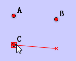
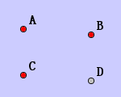
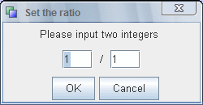
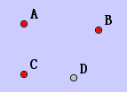
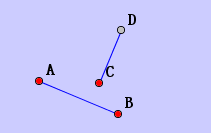

Oriented Segment.
Click two points as the direction and distance. Click another point as the start point of the segment.
- The first two points must be different.
- Suppose the three selected points is A, B, C, after this action, the created point is D. Then we have Vector(AB) = Vector(CD).


Oriented Segment * Ratio.
This action is similiar to Oriented Segment except that it pops another dialog for the user to input the ratio.

If we set the ratio to 2: 3, this indicates that AB// CD and |DC| / |AB| = 2: 3.

Oriented T Segment.
Click two points as the direction and distance. Click another point as the start point of the segment.
- The first two points must be different.
- Suppose the three selected points is A, B, C, after this action, the created point is D. Then we have AB and CD is perpendicular and the angle formed by these two line is 90 clockwise.

Oriented T Segment * Ratio.
This action is similiar to Oriented Segment except that it pops another dialog for the user to input the ratio.
If we set the ratio to 2: 3, this indicates that AB perp CD and |DC| / |AB| = 2: 3.

JGEX Help